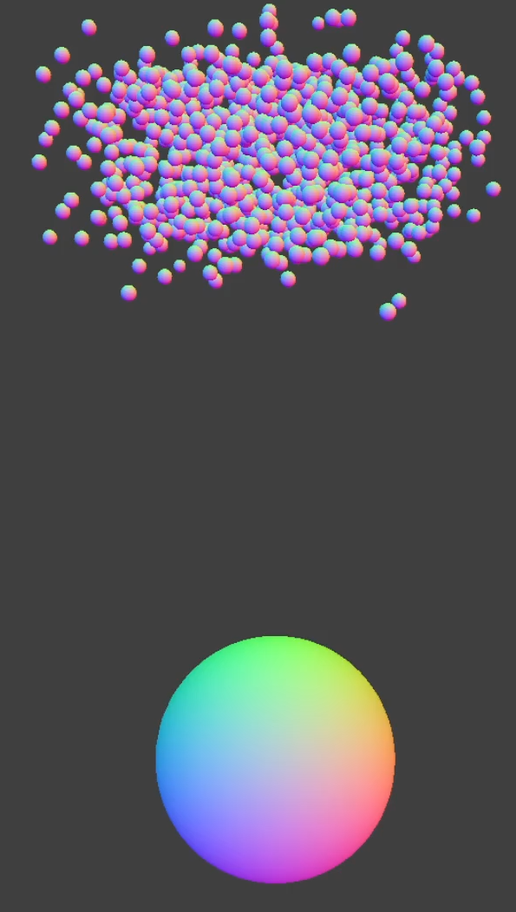
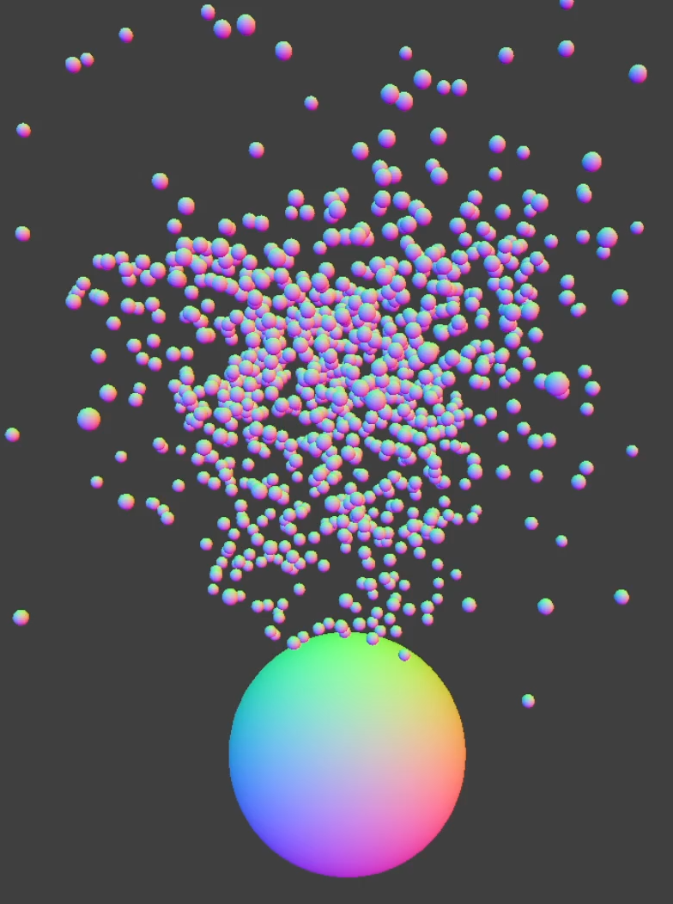
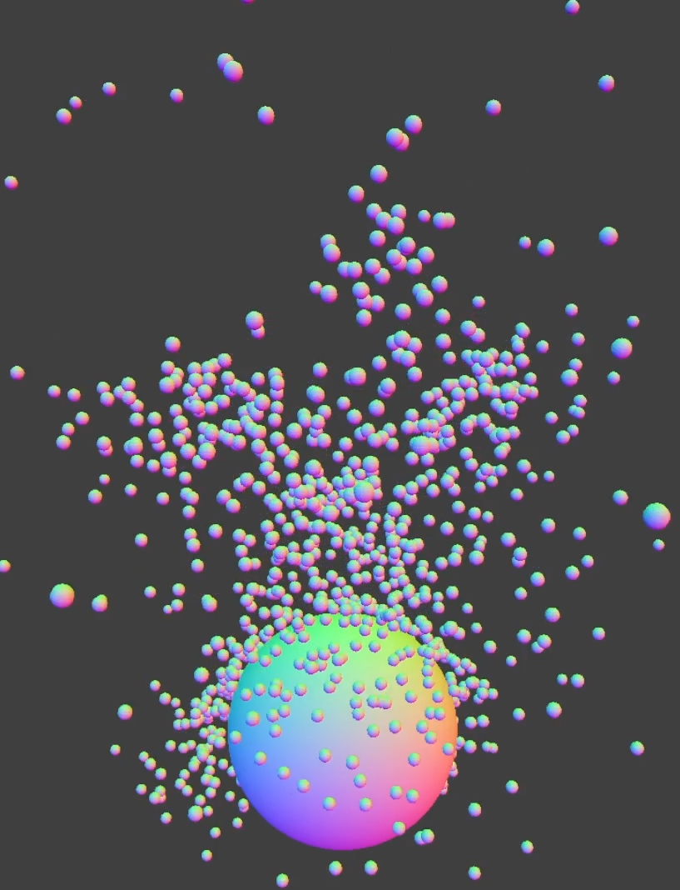
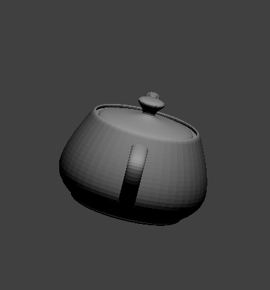
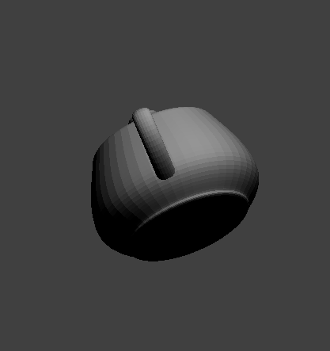
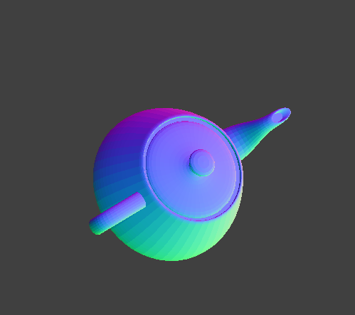
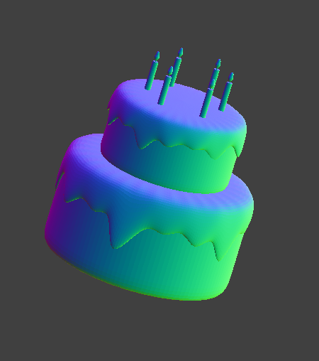

For our project, we aim to create a realistic 3D rendering of a teapot pouring tea into a teacup. So far, we have set up a particle-based fluid simulator based on our cloth simulator. Because cloth is simulated by a system of point masses and springs, by removing the springs, and rendering a sphere for each point mass, we adapt the system to model liquid. Each particle has the properties mass, pressure, density, position, forces, and velocity. We implemented a 3D smoothed particle hydrodynamics (SPH) solver to calculate the positions of the point masses as a result of the accelerations due to density, pressure, and the external forces (gravity) acting on it. At a high level, our simulation is governed by the following physical equations referenced in Penn State EGEE 520:
$$\frac{dv_i}{dt} = a_i^{pressure} + a_i^{viscosity} + a_i^{gravity}$$
$$a_i^{pressure} = \langle -\frac{1}{\text{density}}\nabla \text{pressure}\rangle_i$$
$$a_i^{viscosity} = \langle -\frac{\text{viscosity}}{\text{density}}\nabla \nabla \text{velocity}\rangle_i$$
$$a_i^{gravity}\approx [0\ 0\ -g]^{T}$$
These equations are known as the Navier-Stokes equations, which model the motion of viscous fluids. Since these equations are continuous (and therefore unable to be computed with 100% accuracy), we approximate them using summations - more specifically, given particle $p_i$, we iterate over $p_i$'s neighbors, (calculated using the algorithm outlined below), weighting each neighbor $p_j$ according to a kernel function $K(r)$. This kernel assigns higher values to neighbors that are closer spatially to $p_i$, and vice versa. Summing all neighboring contributions with respect to pressure and viscosity (pressure relying on the gradient $\nabla K(r)$, and viscosity relying on the second derivative $\frac{d^2}{dr^2}K(r)$) gives us $p_i$'s respective accelerations. Finally, with this particle's acceleration and mass, we can calculate the forces acting on $p_i$ for a single timestep $\Delta t$.
In addition to updating the particles' positions using the SPH solver, we also support collisions with other objects such as spheres, planes, and boxes (cube without the top face). The particles are able to flow over these objects in a way similar to water.
Much like implementing path tracing in HW3, we quickly reached the computational limits of needing to test proximity for every particle. The acceleration structure we chose to tackle this problem was a grid-based hash map, modeled after Fast and Efficient Nearest Neighbor Search for Particle Simulations. When computing the effect of nearby particles on density, pressure, and acceleration, we only consider particles in the same grid cell—approximating the kernel defined for SPH.
In parallel with this we have developed an STL rendering engine which takes in binary STL files and renders them using raw OpenGL. Once we have finished rendering fluid dynamics, we intend to use our custom engine to draw all particles. This will be accomplished through each particle being drawn as a sphere, and this custom rendering engine supporting sphere rasterization into triangles.
A binary STL follows a simple format which can be parsed while reading a file in binary mode:
Our implementation parses the information into a Triangle struct which is backed by a series of vec3c (c-style vec3cs which in turn are 12-byte blocks arranged into 3 floats) for each vertex and the normal at each vertex.
This engine does not use CGL nor nanogui and instead relies on GLFW (with GLAD) exclusively, primarily to significantly reduce runtime overhead. This meant we had to use base OpenGL functions to:
|

|

|

|
|

|

|

|

|
Since completing the project proposal, we decided to move some of our preliminary goals (caustics and steam rendering) to stretch goals and to dedicate more time to the liquid particle physics engine.
Over the next two weeks, we hope to achieve the following goals: